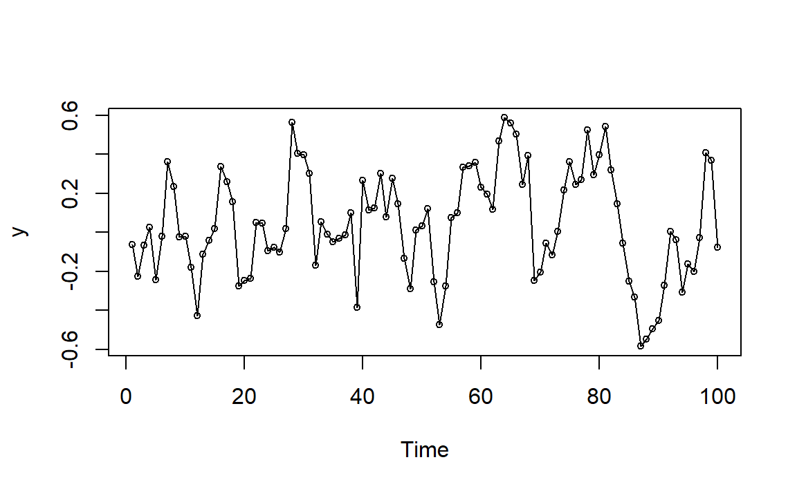

1 ARMA模型的一些图像
1.1 模拟ARIMA
可以使用R自带的函数arima.sim来模拟生成ARIMA模型数据。
例如AR(1):
\[ Y_t = 0.7Y_{t-1}+e_t \]

1.2 MA(q)过程
\[ Y_t = e_t-\theta_1e_{t-1}-\theta_2e_{t-2}-\cdots-\theta_qe_{t-q} \] 注意：这里的表达式每个\(\theta\)前面都是负号，但在R里面的系数指的是 \(-\theta\)。
1.2.1 MA(1)
模型表达： \[ Y_t = e_t-\theta e_{t-1} \]
统计特性： \[ \gamma_0=\sigma_e^2(1+\theta^2),\quad \gamma_1 = -\theta\sigma_e^2,\quad \gamma_k=0(k\ge2) \]
\[ \rho_1=(-\theta)/(1+\theta^2),\quad \rho_k=0(k\ge2) \]
不同\(\theta\)下MA(1)的一阶滞后自相关函数：

图1.1: 不同theta下MA(1)的一阶滞后自相关函数
1.2.1.1 举例1
\[ Y_t = e_t+0.9 e_{t-1} \] 这里的 \(\theta=-0.9\)。
模拟时间序列图：
图1.2: MA(1)例1模拟时间序列图
由图1.1，当\(\theta\)接近-1，一阶自相关系数\(\rho_1\)接近0.5，表示存在中等强度的正相关，如果一个观测值高于平均值，那么下一个观测值一般也会高于平均值，图形随时间变化比较平缓，只是偶尔有比较大的波动。
滞后散点图：
opar <- par(no.readonly = T)
par(mfrow=c(1,2))
plot(zlag(y),y,ylab=expression(Y[t]),xlab=expression(Y[t-1]),
type="p",main="一阶滞后散点图")
plot(zlag(y,2),y,ylab=expression(Y[t]),xlab=expression(Y[t-2]),
type="p",main="二阶滞后散点图")
左图相关性明显，右图相关性不明显。即一阶滞后自相关明显，二阶滞后自相关不明显，与前面提到的统计特性一致。
1.2.1.2 举例2
如果说图1.2的“平缓性”不明显，那我们就来个对比伤害吧。
\[ Y_t = e_t-0.9 e_{t-1} \]
这里的 \(\theta=0.9\)。
模拟时间序列图：
图1.3: MA(1)例2模拟时间序列图
由图1.1，当\(\theta\)接近1，一阶自相关系数\(\rho_1\)接近-0.5，表示存在中等强度的负相关，如果一个观测值高于平均值，那么下一个观测值一般会低于平均值，图形随时间变化呈锯齿状，特别是和图1.2相比。
滞后散点图：
opar <- par(no.readonly = T)
par(mfrow=c(1,2))
plot(zlag(y),y,ylab=expression(Y[t]),xlab=expression(Y[t-1]),
type="p",main="一阶滞后散点图")
plot(zlag(y,2),y,ylab=expression(Y[t]),xlab=expression(Y[t-2]),
type="p",main="二阶滞后散点图")左图相关性明显，右图相关性不明显。即一阶滞后自相关明显，二阶滞后自相关不明显，与前面提到的统计特性一致。
1.2.2 MA(2)
模型表达： \[ Y_t = e_t-\theta_1e_{t-1}-\theta_2e_{t-2} \]
统计特性： \[ \gamma_0=\sigma_e^2(1+\theta_1^2+\theta_2^2),\quad \gamma_1 = (-\theta+\theta_1\theta_2)\sigma_e^2,\quad \gamma_2=-\theta_2\sigma^2_e \]
\[ \rho_1=\frac{-\theta_1+\theta_1\theta_2}{1+\theta_1^2+\theta_2^2},\quad \rho_k=\frac{-\theta_2}{1+\theta_1^2+\theta_2^2},\quad \rho_k=0(k\ge3) \]
1.2.2.1 举例1
\[ Y_t = e_t-e_{t-1}+0.6e_{t-2} \]
这里的 \(\theta_1=1,\theta_2=-0.6\)。从而可以计算 \(\rho_1=-0.678,\rho_2=0.254\)。
模拟时间序列图：
图1.4: MA(2)例1模拟时间序列图
一阶滞后比较强的负自相关，导致了图像呈现比较明显的锯齿状，围绕均值周围震荡。
滞后散点图：
opar <- par(no.readonly = T)
par(mfrow=c(2,2))
plot(zlag(y),y,ylab=expression(Y[t]),xlab=expression(Y[t-1]),
type="p",main="一阶滞后散点图")
plot(zlag(y,2),y,ylab=expression(Y[t]),xlab=expression(Y[t-2]),
type="p",main="二阶滞后散点图")
plot(zlag(y,3),y,ylab=expression(Y[t]),xlab=expression(Y[t-3]),
type="p",main="三阶滞后散点图")
par(opar)与计算得到的\(\rho_k\)基本一致。
1.3 AR(p)过程
\[ Y_t = \phi_1Y_{t-1}+\phi_2Y_{t-2}+\cdots+\phi_pY_{t-p}+e_t \]
1.3.1 AR(1)
模型表达： \[ Y_t = \phi Y_{t-1}+e_t \]
统计特性： \[ \gamma_0=\frac{\sigma_e^2}{1-\phi^2},\quad \gamma_k=\phi\gamma_{k-1}(k\ge1) \]
\[ \rho_k=\phi^k(k\ge1) \]
不同\(\phi\)下AR(1)的自相关函数：
opar <- par(no.readonly = T)
par(mfrow=c(2,2))
p <- c(0.9,0.4,-0.8,-0.5)
k <- seq(1,15,1)
for(i in p) {
m <- bquote(phi~"="~.(i)) # 将数学符号跟变量结合在一起
y = i^k
plot(k,y,xlab = "滞后",ylab = "自相关函数",
main = m,type="h")
points(k,y,pch=20)
abline(h = 0)
}
par(opar)图1.5: 不同phi下AR(1)的自相关函数
由于\(|\phi|<1\)（平稳性），所以随着滞后长度k的增长，自相关系数的绝对值呈指数递减。当\(\phi>0\)，自相关系数均大于0，当\(\phi<0\)，自相关系数正负交错。
当\(\phi\)在\(\pm1\)附近，指数递减得很慢，远离\(\pm1\)时会指数递减得很快。所以当\(\phi\)在\(\pm1\)附近时，强相关性将会持续很多期。如果\(\phi>0\)，序列会相对平滑（可能还会看起来像是有趋势），如果\(\phi<0\)，序列呈锯齿状。
关于上图中将数学符号跟变量结合在一起的做法，详见 https://blog.csdn.net/weixin_41929524/article/details/103610743, https://stackoverflow.com/questions/15074127/use-expression-with-a-variable-r
1.3.1.1 举例1
\[ Y_t = 0.9Y_{t-1}+e_t \]
这里 \(\phi=0.9\)。
模拟时间序列图：
图1.6: AR(1)例1模拟时间序列图
由图1.6可以看到，图像比较平滑，看起来像是存在某种趋势（这当然是不存在的，均值恒为0），这是因为时间序列由于多期的强相关性而存在大量惯性变化。
1.3.2 AR(2)
模型表达： \[ Y_t = \phi_1 Y_{t-1}+\phi_2 Y_{t-2}+e_t \]
统计特性：
由Yule-Walker方程 \[ \rho_k = \phi_1\rho_{k-1}+\phi_2\rho_{k-2},\quad k\ge1 \] 导出： \[ \rho_1=\frac{\phi_1}{1-\phi_2},\quad \rho_2=\frac{\phi_2(1-\phi_2)+\phi_1^2}{1-\phi_2} \]
不同\(\phi_1,\phi_2\)下AR(1)的自相关函数：
opar <- par(no.readonly = T)
par(mfrow=c(2,2))
p <- c(0.5,0.25,1.0,-0.25,1.5,-0.75,1.0,-0.6)
for(i in 1:4) {
# 将数学符号跟变量结合在一起
m <- bquote(phi[1]~"="~.(p[2*i-1])~phi[2]~"="~.(p[2*i]))
# 生成理论自相关函数
y <- ARMAacf(ar = c(p[2*i-1],p[2*i]),lag.max = 12)[-1]
plot(y,xlab = "滞后",ylab = "自相关函数",
main = m,type="h")
points(y,pch=20)
abline(h = 0)
}
par(opar)图1.8: 不同phi下AR(2)的自相关函数
上面所表示的AR(2)模型均满足平稳性: \[ \phi_1+\phi_2<1,\quad \phi_2-\phi_1<1,\quad |\phi_2|<1 \]
类似于图1.5，在实数特征根（\(\phi^2_1+4\phi_2\ge0\)）下图像依旧是呈指数递减，在复数特征根下图像呈阻尼正弦波动曲线。
1.3.2.1 举例1
\[ Y_t = 0.5 Y_{t-1}+0.25 Y_{t-2}+e_t \]
这里 \(\phi_1=0.5,\phi_2=0.25\)。
模拟时间序列图：
图1.9: AR(2)例1模拟时间序列图
与图像1.6对比一下。